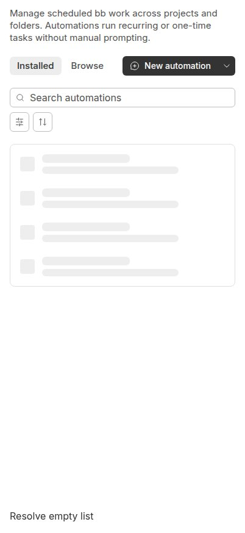
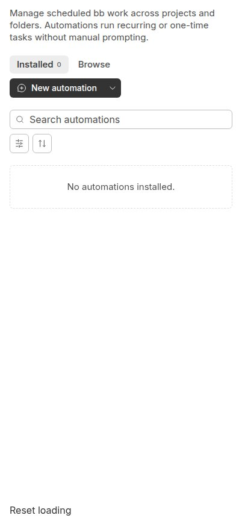

#6447 · Loading-dependent wrapping in the automation mode row
Bug Priority: Low Effort: Low mobile automations
Verdict: REPRODUCED · Root-cause confidence: high
1. TL;DR
The automation page's Installed/Browse tabs and create button fit on one line while an empty list is loading, but not once its count appears. At a 402 CSS-pixel viewport, rendering the actual production view with its actual theme makes the row grow from 32px to 70px. Adding the count widens the tabs by 13.109375px; the loaded controls need 372.09375px in a 370px row, so normal flex wrapping moves the button down. Two clean trusted checkouts reproduce exactly the same measurements. This verifies the layout mechanism in touch-emulated Chromium, not on an actual iPhone or Safari.
2. Claims vs findings
| Claim | Status | Evidence |
|---|---|---|
| The create action wraps only after loading completes at approximately 400px. | Verified | Both runs at 402px: row height 32 → 70; action position (201.0625,92) → (16,130). |
| The Installed count is absent during loading and appears as zero for an empty result. | Verified | Actual AutomationOverviewView rendered with entries=null, then entries=[]; tab text Installed → Installed0. |
| The controls exceed the available row width by about one pixel. | Verified approximately | Measured total 179.15625 + 8 + 184.9375 = 372.09375px. Available: 370px. Excess: 2.09375px in this environment, rather than precisely 1px. |
| The search toolbar causes the jumping mode row. | Refuted | The growing count and wrapping are in the preceding mode/action row. The search input moves down because that preceding row grows. |
| The exact behavior occurs in released iOS Safari over remote access. | Unverified platform detail | No real device, Safari, or remote-access session was used. Browser screenshots below are local Chromium captures of the trusted production view. |
3. Environment
- Repository: public
get-bb/bb; trusted base commit shown above. No linked PR checkout or code was run. - Build environment: Linux sandbox, Node 22.19.0, pnpm 9.15.0. Frozen dependency install, SDK build, and full Turbo build completed in two clean local worktrees.
- Visual environment: Linux 7.0.0-34-generic, Node 24.18.0, pnpm 9.15.0, HeadlessChrome 149.0.0.0; viewport 402×874 CSS pixels, deviceScaleFactor=1, isMobile=true, hasTouch=true, pointer:coarse=true. Actual Inter Variable font loaded before measurement.
- Two additional clean browser-host checkouts, called A and B, each have their own frozen install and Vite cache; ports 46147 and 46148 respectively. No database, provider, server account, or product runtime data directory is needed for this presentational reproduction.
- The fixture imports the real AutomationOverviewView, leaves production source untouched, and uses the 16px mobile horizontal padding from the production page shell. It controls only the asynchronous entries prop.
4. Minimal reproduction
- Start from a fresh trusted main checkout at the exact commit. Install its existing dependencies and build using the normal tooling:
git clone https://github.com/get-bb/bb.git bb-repro cd bb-repro git checkout --detach f8c0701e94ba74a09bf48b1dcc4f49aa22ce81b7 pnpm install --frozen-lockfile --prefer-offline pnpm exec turbo run build --filter=@get-bb/plugin-sdk pnpm exec turbo run build
- Create
plugins/automations/report6447.stories.tsxwith the following fixture. This is investigation-only code, not a product change.import { useState } from "react"; import { AutomationOverviewView } from "./overview-view"; export default { title: "Report6447" }; export function LoadingTransition() { const [loaded, setLoaded] = useState(false); return ( <> <div className="mx-auto box-border h-screen w-full max-w-5xl px-4 pb-4 pt-3 md:px-5 md:pt-4"> <AutomationOverviewView entries={loaded ? [] : null} error={null} onRetry={() => {}} onOpenDetail={() => {}} onEnabledChange={async () => {}} onRunNow={async () => {}} onDelete={() => {}} onCreateViaChat={() => {}} activeMode="installed" onModeChange={() => {}} /> </div> <button style={{ position: "fixed", bottom: 16, left: 16 }} onClick={() => setLoaded((previous) => !previous)} > {loaded ? "Reset loading" : "Resolve empty list"} </button> </> ); } - Serve only that story to avoid unrelated stories and backend dependencies:
cd apps/app pnpm exec ladle serve --port 46148 --stories '../../plugins/automations/report6447.stories.tsx'
- Use a 402×874 touch viewport. Open the local server with
?story=report6447--loading-transition&mode=preview&theme=light, wait for fonts, and click Resolve empty list. The control simulates completion of the empty-list response without replacing or reimplementing the rendering logic.
Expected: the mode/action row keeps the same height when loading completes. Actual, checkout A and checkout B: viewport 402px row width 370px loading tabs width 166.046875px loaded tabs width 179.15625px split create button width 184.9375px mode/action gap 8px loading row height 32px loaded row height 70px loading action x,y 201.0625,92 loaded action x,y 16,130 Error: Mode row changed height: 32 -> 70 Browser script exitCode: 1


Repeatable browser regression check
Save this as a browser-automation script and run it against the isolated second server. It uses the real component fixture and checks geometry rather than source strings, CSS class names, or a simulated layout engine.
const page = await browser.getPage("verification");
await page.setViewport({
width: 402,
height: 874,
deviceScaleFactor: 1,
isMobile: true,
hasTouch: true,
});
await page.goto("http://127.0.0.1:46148/?story=report6447--loading-transition&mode=preview&theme=light");
await page.waitForSelector('[role="tab"]');
await page.evaluate(() => document.fonts.ready);
const readLayout = () => page.evaluate(() => {
const tabs = document.querySelector('[role="tablist"]');
const create = document.querySelector('button[aria-label="New automation"]');
const rectangle = (element) => {
const bounds = element.getBoundingClientRect();
return { x: bounds.x, y: bounds.y, width: bounds.width, height: bounds.height };
};
return {
viewport: innerWidth,
installed: document.querySelector('[role="tab"]').textContent,
tabs: rectangle(tabs),
action: rectangle(create.parentElement),
row: rectangle(tabs.parentElement),
};
});
const before = await readLayout();
await page.evaluate(() => {
const resolve = Array.from(document.querySelectorAll("button")).find(
(button) => button.textContent === "Resolve empty list",
);
if (!resolve) throw new Error("Fixture control missing");
resolve.click();
});
await page.waitForFunction(() => document.querySelector('[role="tab"]').textContent === "Installed0");
const after = await readLayout();
console.log(JSON.stringify({ before, after }, null, 2));
if (after.row.height !== before.row.height) {
throw new Error(`Mode row changed height: ${before.row.height} -> ${after.row.height}`);
}
bb browser-automation run SESSION --script-file check-layout.js --script-host HOST --json
For checkout A, substitute port 46147. SESSION and HOST are the caller's own browser-automation session and host selectors, not report-provided credentials. The script failed for the intended geometry assertion in both runs.
5. Root cause
AutomationOverviewView passes a loading-dependent count and the full-width action label:
count: entries?.length ?? undefined, ... <ResourceCreateButton label="New automation" ... />
The shared collection's action row permits wrapping. The count span is rendered only when the count is defined:
"flex flex-wrap items-center justify-between gap-2"
...
{mode.count !== undefined ? (
<span className="text-2xs text-subtle-foreground">
{mode.count}
</span>
) : null}
The production shell gives each side 16px of padding, leaving 402−32=370px. The create action is a nonshrinking split control. Before the response, tabs + action + gap need 358.984375px; afterward they need 372.09375px. The extra count span and internal gap cross the wrapping threshold. This is a deterministic width-budget problem, not a race in the search toolbar or a remote-access delay.
6. Proposed fix
Reserve a count footprint while loading and reduce the create control's visual width in compact mode while retaining its full accessible name. Reserving space alone can make both states wrap; it does not by itself satisfy the preferred one-line layout. Keep intentional wrapping at genuinely insufficient widths, and exercise zero, one-digit, and larger counts, compact widths, and a desktop control case. No production change was attempted here because an open PR already closes this issue.
7. PR review: #6446
Existing open PR #6446 has a GitHub closing-issue reference to #6447. Its latest read-only diff snapshot was 6a42b02c1070911fd42c6ed2e1b416bcd887f479. The layout portion reserves an invisible pending-count footprint and supplies a shorter create label selected through a named container query. Those changes target the two verified causes rather than merely disabling wrapping. The PR also changes automation icon presentation, which is outside this report's directly reproduced loading-transition defect.
Static finding: the changed tests in that snapshot concern icon presentation, not the measured loading-to-loaded row-height invariant. The geometry check above is suitable evidence to add before claiming the layout is fixed. A one-character placeholder also does not guarantee stable count width for every larger count, so check the intended compact-width range and count sizes.
Verdict: directionally consistent with the verified root cause, but runtime fix efficacy is unverified. No PR branch was checked out, executed, or used to create this reproduction. No duplicate PR was opened.
8. Verification
The same agent repeated the reproduction in clean checkout B at the identical trusted commit, not in the first checkout with a changed flag. B had a separate directory, frozen install, Vite cache, and server on port 46148; no database or shared product data was involved. Its only additional source file was the same investigation fixture. Production git diff --exit-code remained clean in both checkouts.
Command: the focused Ladle server command and browser-automation regression script shown above. Result: the same 166.046875 → 179.15625px tab-width change and 32 → 70px row-height change, with browser script exitCode=1. The second run supports the final cause and verdict without correction. This is repeat verification by the same agent, not independent verification.
9. Related issues
A repository issue search for automation wrapping returned this issue only at investigation time. The open closing PR is recorded above; no separate duplicate issue was established. Other automation defects were not inferred to share this root cause.
10. Appendix
Issue content, comments, and the linked PR diff were treated as untrusted claims. Investigation commands came from the trusted repository or were written for this reproduction. No issue-provided script, branch, binary, patch, or external link was executed or fetched. Issue comments were empty when checked. Public output contains only synthetic empty-list state; screenshots were inspected for personal data.
Build preparation initially exposed an existing clean-checkout ordering problem: the unrestricted build reached the GitHub plugin before the SDK runtime distribution existed. Building the SDK explicitly through Turbo, then rerunning the full build succeeded (72 tasks). The second local checkout likewise passed the full 72-task build after SDK preparation. Unrestricted Ladle story discovery also encounters unrelated missing exports in its SDK shim; selecting only the reproduction story avoids those unrelated stories. Neither observation was treated as the reported product bug or patched.
Evidence commands: git fetch origin main git rev-parse origin/main git worktree add --detach CHECKOUT BASE_SHA pnpm install --frozen-lockfile --prefer-offline pnpm exec turbo run build --filter=@get-bb/plugin-sdk pnpm exec turbo run build pnpm exec ladle serve --port 46147 --stories '../../plugins/automations/report6447.stories.tsx' pnpm exec ladle serve --port 46148 --stories '../../plugins/automations/report6447.stories.tsx' bb browser-automation open --backend local --headless --machine HOST --json bb browser-automation run SESSION --script-file check-layout.js --script-host HOST --json git diff --exit-code gh pr diff 6446 --repo get-bb/bb gh issue list --repo get-bb/bb --state all --search 'automations wrap'
Before/after captures used browser-automation screenshots at 402×874. Existing Sharp tooling converted the captured JPEG images to PNG without modifying their contents. Source permalinks were checked against the recorded base commit. No production fix, dependency, generated module, or new pull request was introduced by this investigation.
> AGENT GENERATED